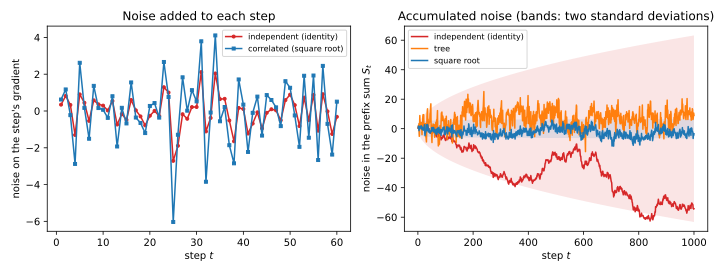
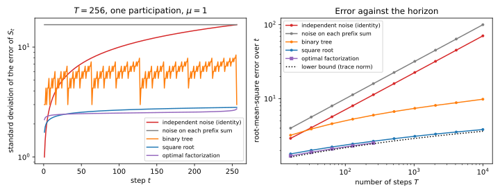
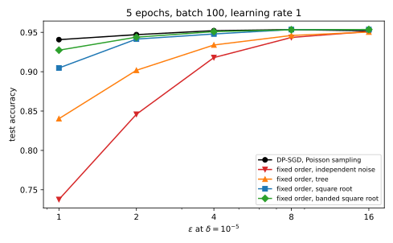

39 DP-FTRL and matrix factorization
39.1 Why this matters
Stochastic gradient descent (SGD) with differential privacy (DP), the DP-SGD of the previous chapter, gets its privacy from two sources. Clipping and Gaussian noise make each step a Gaussian mechanism, and Poisson sampling makes each step much more private than that: a record is in the batch only with probability \(q\), and the accountant credits the run for the uncertainty about whether the record was used. For the running example of this part, with \(q = 0.01\), that amplification is what turns a noise multiplier of 1 into \(\varepsilon = 6.71\) over 10,000 steps.
Many training pipelines cannot honestly claim Poisson sampling. Data loaders shuffle the dataset once, or once per epoch, and cut it into fixed batches; streaming pipelines read the data in the order it arrives; and in federated learning, where the records live on phones, the server cannot choose which devices check in, so it cannot sample them independently with a known probability. Amplification by subsampling shows that applying the Poisson accountant to such pipelines can understate \(\varepsilon\) considerably. The honest alternative is to give up amplification. Each step is then a plain Gaussian mechanism, and on the running example, for \(\varepsilon = 2\) over five passes through the data, the noise multiplier has to grow from 0.928 to 4.458, and test accuracy falls from 0.9460 to 0.8941.
This chapter asks: how do you train privately without trusting random batches, and can correlated noise beat independent noise? It can, by a lot, and the reason is a change of viewpoint. The first algorithm to exploit it ran the follow the regularized leader (FTRL) algorithm on noisy gradient sums and is called DP-FTRL; it adds its noise through a binary tree, a construction from the theory of private counters. The modern form, the matrix factorization mechanism, contains the tree as a special case, and on the running example it closes nearly all of the gap to amplified DP-SGD without any sampling at all.
39.1.1 The one idea: training releases prefix sums, so put the noise where the prefix sums need it
Gradient descent without momentum adds up its steps. After \(t\) steps the weights are the starting point minus the step size times the prefix sum \(S_t = x_1 + \dots + x_t\) of the clipped gradient sums \(x_s\) of the batches seen so far. What the models reveal about the data is what these prefix sums reveal, and the error in a model is the error in its prefix sum. SGD with independent noise on every step, DP-SGD without amplification, makes the noise in \(S_t\) a random walk, whose standard deviation grows like \(\sqrt t\). Nothing forces the noise to be independent. If the noise added at step \(t\) partly cancels the noise added before it, the prefix sums stay accurate. The price is that each record’s gradient must then be hidden in several noisy quantities at once.
The bookkeeping is linear algebra. Releasing all \(T\) prefix sums is the linear map \(x \mapsto Ax\), with \(A\) the lower-triangular matrix of ones. Write \(A = LR\), add Gaussian noise to \(Rx\), and release \(L(Rx + z) = Ax + Lz\). The encoder \(R\) sets the privacy, because the noise must hide one record’s effect on \(Rx\); the decoder \(L\) sets the error, because it is what multiplies the noise. Independent noise, the binary tree and the best known mechanisms are all choices of this factorization, and the question “how much noise does private training need without amplification?” becomes “how small can the sensitivity of \(R\) times the size of \(L\) be?”. Table 39.1 lists the results.
| Result | Where it is used |
|---|---|
| Training as a prefix-sum workload; the two naive mechanisms | Why DP-SGD without amplification is noisy; what DP-FTRL releases |
| The matrix mechanism: privacy from the columns of \(R\), error from the rows of \(L\), and a lower bound | Comparing any two correlated-noise schemes; streaming and adaptivity |
| Tree aggregation and DP-FTRL | The first practical mechanism; federated training |
| The square-root factorization and the optimal one | The default correlated-noise mechanism; how close it is to optimal |
| Several participations: sensitivity as the norm of a sum of columns; banded factorizations | Training for more than one epoch; why the data order matters |
| The running example: matrix mechanisms against DP-SGD | When to use which; user-level privacy in federated learning |
Notation. A run has \(T\) steps with a fixed batch size \(B\). At step \(t\) the clipped per-example gradients of the batch are summed into \(x_t \in \mathbb R^p\), one entry per weight; stacking the \(x_t\) as rows gives the \(T \times p\) matrix \(x\). \(C\) is the clipping norm, so each record adds a vector of length at most \(C\) to each \(x_t\) it takes part in. \(S_t = \sum_{s \le t}x_s\) is the \(t\)-th prefix sum and \(\hat S_t\) its private estimate. \(A\) is the \(T \times T\) lower-triangular matrix of ones. A factorization is \(A = LR\), with \(R\) an \(m \times T\) encoder and \(L\) a \(T \times m\) decoder; \(r_j\) is the \(j\)-th column of \(R\) and \(\ell_t\) the \(t\)-th row of \(L\). The noise \(z\) is \(m \times p\) with independent \(\mathcal N(0, s^2C^2)\) entries; \(s\) is the noise scale, in units of \(C\) like DP-SGD’s noise multiplier \(\sigma\). \(\mu\) is the ratio of sensitivity to noise standard deviation of a Gaussian mechanism, and \(E\) the number of epochs.
The running example. The part’s network from DP-SGD: 50-dimensional inputs, labels from a fixed random teacher network, a student with 64 tanh hidden units and \(p = 3{,}329\) weights, \(n = 10{,}000\) training and 20,000 test records, clipping norm \(C = 0.5\), \(\delta = 10^{-5}\). The fixed-order runs use one public random permutation of the record slots, drawn independently of the data and kept for every epoch, cut into 100 batches of \(B = 100\). Each epoch is 100 steps, and each record participates once per epoch, exactly 100 steps apart. The DP-SGD runs use Poisson sampling with \(q = 0.01\), so their expected batch is also 100.
How to read this chapter. Read the toolkit and Section 39.3, which sets up the problem, then Section 39.4, the general framework. Section 39.5 and Section 39.6 are two instances, the historical one and the one to use. Section 39.7 is needed as soon as you train for more than one epoch. Section 39.8 puts the pieces together on the running example.
39.2 Toolkit: four facts every derivation uses
39.2.1 Fact 1 — A Gaussian mechanism is described by one ratio
Release \(f(D) + Z\), where \(f\) takes values in \(\mathbb R^{m \times p}\) and \(Z\) has independent \(\mathcal N(0, \varsigma^2)\) entries. Let \(\Delta\) be the largest change of \(f\) between neighbouring datasets, measured in the Frobenius norm: the square root of the sum of squared entries, the Euclidean length of the matrix read as one long vector. The privacy of the release depends only on \(\mu = \Delta/\varsigma\), because rotating the output space puts the shift on one axis, and the noise on every other axis has the same distribution under both datasets (The Laplace and Gaussian mechanisms). Such a mechanism is \(\mu\)-Gaussian differential privacy (GDP), and it is \((\varepsilon, \delta)\)-DP exactly when \[\delta \ge \Phi\Big(\frac\mu2 - \frac\varepsilon\mu\Big) - e^\varepsilon\,\Phi\Big(-\frac\mu2 - \frac\varepsilon\mu\Big), \tag{39.1}\] with \(\Phi\) the standard normal distribution function (f-DP and Gaussian DP). The right side grows with \(\mu\), so each \((\varepsilon, \delta)\) has a largest admissible ratio \(\mu(\varepsilon, \delta)\). At \(\delta = 10^{-5}\), \(\mu(2, \delta) = 0.502\) and \(\mu(8, \delta) = 1.666\). The noise standard deviation for sensitivity \(\Delta\) is then \(\varsigma = \Delta/\mu(\varepsilon, \delta)\).
39.2.2 Fact 2 — Post-processing
Any computation on a private output that does not touch the data again is as private as the output (Post-processing, group privacy and composition). Multiplying a noisy matrix by a fixed matrix, and taking gradient steps with the result, are post-processing.
39.2.3 Fact 3 — A linear combination of independent Gaussian noise
If \(z\) has independent \(\mathcal N(0, \varsigma^2)\) entries and \(\ell\) is a fixed row vector, then \(\ell z\), one number for each of the \(p\) columns, has independent coordinates, each normal with variance \[\varsigma^2\|\ell\|^2 = \varsigma^2\sum_j\ell_j^2, \tag{39.2}\] because a weighted sum of independent normals is normal and the variances of independent terms add, each multiplied by its weight squared. Applied to the rows \(\ell_t\) of a decoder, the error of the \(t\)-th released prefix sum has standard deviation \(\varsigma\|\ell_t\|\) in each coordinate. Two rows give correlated errors, with covariance \(\varsigma^2\,\ell_t\cdot\ell_u\).
39.2.4 Fact 4 — Adaptive Gaussian steps compose into one Gaussian
If each of \(k\) steps is a Gaussian mechanism with ratio \(\mu_i\), and each step may depend on the outputs of the earlier ones, the run is \(\sqrt{\mu_1^2 + \dots + \mu_k^2}\)-GDP (f-DP and Gaussian DP; Private empirical risk minimization restates the argument). Conditionally on the earlier outputs, each step’s privacy loss is normal with the mean and variance of a one-step Gaussian loss, so the losses add like independent normals, and their variances, which are the \(\mu_i^2\), add.
39.3 Training is a stream of prefix sums
39.3.1 Context
What does a training run actually have to release, and what does privacy cost when the data order is fixed and nothing is sampled? Pinning this down turns training into a classic problem, the private release of running sums, for which much better mechanisms exist than fresh noise on every step.
39.3.2 Statement
Run gradient descent with a constant step size \(\eta\) and no momentum, \(w_{t+1} = w_t - \frac\eta B\hat x_t\), where \(\hat x_t\) is the possibly noisy clipped gradient sum of step \(t\). Then \[w_{t+1} = w_0 - \frac\eta B\hat S_t, \qquad \hat S_t = \sum_{s \le t}\hat x_s, \tag{39.3}\] so the whole run is a post-processing of the prefix sums \(\hat S_1, \dots, \hat S_T\), and the noise in \(w_{t+1}\) is \(\eta/B\) times the noise in \(\hat S_t\). FTRL with linearized losses and a quadratic regularizer, \(w_{t+1} = \arg\min_w\big(\langle\hat S_t, w\rangle + \frac B{2\eta}\|w - w_0\|^2\big)\), produces the same weights. Releasing all prefix sums is the linear workload \[S = Ax, \qquad A = \begin{pmatrix}1 & & & \\ 1 & 1 & & \\ \vdots & & \ddots & \\ 1 & 1 & \cdots & 1\end{pmatrix} \in \mathbb R^{T \times T}, \tag{39.4}\] where row \(t\) of \(Ax\) is \(S_t\). For a record that takes part in one step, two mechanisms suggest themselves, each with the noise that makes it \(\mu\)-GDP for its own sensitivity:
- Independent noise on each step, \(\hat S_t = \sum_{u \le t}(x_u + z_u)\): sensitivity \(C\), and error standard deviation \(\sqrt t\) in units of \(C/\mu\) for \(\hat S_t\).
- Independent noise on each prefix sum, \(\hat S_t = S_t + z_t\): sensitivity \(\sqrt TC\), and error standard deviation \(\sqrt T\) in the same units, for every \(t\).
39.3.3 Derivation
- Unroll the recursion. Adding the updates \(w_{u+1} - w_u = -\frac\eta B\hat x_u\) for \(u = 1, \dots, t\) telescopes to Equation 39.3. The weights at every step are a fixed function of the released prefix sums, so releasing the prefix sums privately makes every model private (Fact 2).
- FTRL. The FTRL objective is a linear term plus a quadratic; setting its gradient \(\hat S_t + \frac B\eta(w - w_0)\) to zero gives \(w = w_0 - \frac\eta B\hat S_t\), the same point.
- Independent noise on each step: privacy. The record changes only \(x_\tau\), its step, by a vector of length at most \(C\). The released noisy gradients \(x_u + z_u\) are one Gaussian mechanism per step, and only step \(\tau\) moves, so the run is a Gaussian mechanism with sensitivity \(C\); the prefix sums are post-processing of the noisy gradients. Noise \(z_u \sim \mathcal N(0, C^2/\mu^2)\) per coordinate gives \(\mu\)-GDP.
- Its error. \(\hat S_t - S_t = z_1 + \dots + z_t\), a sum of \(t\) independent normals with variance \(C^2/\mu^2\) each, so its standard deviation is \(\sqrt tC/\mu\) (Fact 3 with \(\ell = (1, \dots, 1, 0, \dots, 0)\)).
- Independent noise on each prefix sum: privacy. The record’s gradient appears in every \(S_t\) with \(t \ge \tau\), so \(T - \tau + 1\) of the released vectors move by the same vector of length up to \(C\). The total Frobenius change is \(\sqrt{T - \tau + 1}\,C\), at most \(\sqrt TC\) for \(\tau = 1\). By Fact 1 the noise must be \(\sqrt TC/\mu\), and that is the error of every \(\hat S_t\).
39.3.4 Interpretation
DP-SGD without amplification is the first mechanism. Fixed-order noisy SGD adds independent noise to every step, so its model at step \(t\) carries a random walk of \(t\) noise vectors. At the end of a run of \(T\) steps the walk has standard deviation \(\sqrt T\) times the per-step noise. The second mechanism makes every prefix sum equally noisy, but no better than the worst prefix sum of the first. Neither exploits the structure of \(A\): the first ignores that the noise accumulates, the second ignores that most of \(S_t\) was already released in \(S_{t-1}\).
Why prefix sums, and not just the last model? If only the final model were released, one prefix sum, \(S_T\), would suffice, with sensitivity \(C\) and error \(C/\mu\). But training is adaptive: the gradient \(x_t\) is computed at \(w_t\), which depends on the earlier noisy prefix sums. The mechanism has to produce all the intermediate models anyway, and each must be private, because the later gradients are functions of them. So the workload is all \(T\) rows of \(A\), released one at a time as the stream arrives.
Other optimizers are other workloads. With momentum or a learning-rate schedule the weights are still fixed linear combinations of the noisy gradients, only with a different lower-triangular matrix in place of \(A\). Denisov, McMahan, Rush, Smith & Thakurta (2022) factor those matrices too. This chapter keeps plain gradient descent, so the workload is always \(A\).
39.3.5 Example: one epoch of the running example
Take one epoch, \(T = 100\) steps, and normalize \(\mu = 1\), \(C = 1\). Independent noise on each step gives a final prefix sum with error standard deviation \(\sqrt{100} = 10\) and a root-mean-square error over the 100 prefix sums of \(\sqrt{(1 + 2 + \dots + 100)/100} = \sqrt{50.5} = 7.11\). Independent noise on each prefix sum has error 10 on every one. At \(\varepsilon = 2\), \(\mu = 0.502\), so the first mechanism’s noise scale is \(1/0.502 = 1.994\) per step, in units of \(C\), and its final prefix sum carries noise of standard deviation 19.94 in units of \(C\). DP-SGD with Poisson sampling at the same \(\varepsilon\) and \(T\) needs only \(\sigma = 0.827\), and its final prefix sum carries \(0.827\sqrt{100} = 8.27\): amplification buys a factor of 2.4 here. The rest of the chapter shows that correlated noise can beat even that, without any sampling.
39.3.6 Check yourself
- Why is the noise in the model after \(t\) steps of fixed-order noisy SGD of order \(\sqrt t\) and not \(t\)? (The per-step noises are independent with mean zero, so their variances add: the sum of \(t\) of them has variance \(t\) times one, and standard deviation \(\sqrt t\) times one.)
- With momentum, are the weights still a post-processing of the prefix sums of noisy gradients? (Yes. Momentum combines the past noisy gradients linearly with fixed coefficients, and the noisy gradients are the differences of consecutive noisy prefix sums. A factorization of the momentum matrix itself can do better than going through prefix sums.)
39.4 The matrix mechanism
39.4.1 Context
The two naive mechanisms put noise at opposite ends: on the inputs, or on the answers. The matrix mechanism of Li, Hay, Rastogi, Miklau & McGregor (2010) puts it in between, on some linear transformation \(Rx\) of the inputs from which the answers can be recovered linearly. How private is such a release, how accurate, and what does it need to work on a stream whose inputs are chosen adaptively?
39.4.2 Statement
Let \(A = LR\), with \(R \in \mathbb R^{m \times T}\) and \(L \in \mathbb R^{T \times m}\), and release \[\hat S = L(Rx + z) = Ax + Lz, \qquad z_{jk} \sim \mathcal N(0, s^2C^2) \text{ independent}. \tag{39.5}\]
Privacy. If a record takes part in one step, at a position fixed in advance, the release is \(\mu\)-GDP with \[\mu = \frac{\operatorname{sens}(R)}{s}, \qquad \operatorname{sens}(R) = \max_j\|r_j\|, \tag{39.6}\] the largest Euclidean length of a column of \(R\). This holds even when each \(x_t\) is chosen after seeing \(\hat S_1, \dots, \hat S_{t-1}\), provided \(L\) and \(R\) are lower-triangular (streaming).
Error. Each coordinate of \(\hat S_t - S_t\) is normal with mean zero and standard deviation \(sC\|\ell_t\|\). At a fixed privacy level \(\mu\) this is \[\frac C\mu\,e_t, \qquad e_t = \operatorname{sens}(R)\,\|\ell_t\|, \tag{39.7}\] and \(e_t\), the error per unit of privacy, is unchanged if \(R\) is multiplied by any number \(c > 0\) and \(L\) divided by it. Two summaries are used below: the root-mean-square error \(\big(\frac1T\sum_te_t^2\big)^{1/2} = \operatorname{sens}(R)\,\|L\|_F/\sqrt T\), and the maximum error \(\max_te_t\).
Lower bound. For every factorization, \[\Big(\frac1T\sum_te_t^2\Big)^{1/2} = \frac{\operatorname{sens}(R)\,\|L\|_F}{\sqrt T} \ge \frac{\|A\|_*}T, \tag{39.8}\] where \(\|A\|_* = \sum_k\sigma_k(A)\) is the sum of the singular values of \(A\), its trace norm. For the prefix-sum matrix, \(\sigma_k(A) = 1/\big(2\sin\frac{(2k - 1)\pi}{4T + 2}\big)\) for \(k = 1, \dots, T\).
39.4.3 Derivation
- The release is a function of \(Rx + z\). \(L\) is fixed, so \(\hat S\) is post-processing of \(Rx + z\) (Fact 2), and \(LRx = Ax\) by the factorization.
- Sensitivity, non-adaptive inputs. Neighbouring streams differ in the record’s contribution \(g\) to \(x_\tau\), a vector of length at most \(C\): row \(\tau\) of \(x\) changes by \(g\) and nothing else. Then \(Rx\) changes by \(r_\tau g^\top\), column \(\tau\) of \(R\) times the row \(g\), whose Frobenius norm is \(\|r_\tau\|\,\|g\| \le \|r_\tau\|C\) (each entry is \(r_{j\tau}g_k\), and the sum of their squares factorizes). The worst position gives \(\max_j\|r_j\|\,C\), and Fact 1 with noise \(sC\) gives Equation 39.6.
- Adaptive inputs, one participation. In training, \(x_t\) is computed at \(w_t\), which depends on the earlier outputs. With \(L\) and \(R\) lower-triangular, row \(j\) of \(Rx + z\) depends on \(x_1, \dots, x_j\) only, so the mechanism can release row \(j\) of \(Rx + z\) at step \(j\), and \(\hat S_j\) with it. Compare the two streams step by step. Before step \(\tau\) the record has contributed nothing, so the outputs before \(\tau\) have the same distribution under both. Condition on them: they fix \(w_\tau\), hence the record’s contribution \(g\). From then on, at any step, the other records’ gradients are the same functions of the earlier outputs in both runs, and the record contributes nothing more, so given the same history the mean of each later row of \(Rx + z\) differs between the two runs by the matching row of the fixed shift \(r_\tau g^\top\). Released row by row, these are Gaussian mechanisms whose squared shifts add up to \(\|r_\tau g^\top\|_F^2 \le \|r_\tau\|^2C^2\), so by Fact 4 the rest of the run is Gaussian with ratio at most \(\|r_\tau\|C/(sC)\), as in step 2. Averaging over the history before \(\tau\) keeps the bound. Denisov et al. (2022, Theorem 2.1) prove the general statement: any factorization of a lower-triangular \(A\) that is \(\mu\)-GDP, or \((\varepsilon, \delta)\)-DP, for fixed streams stays so for adaptively chosen ones, with the same parameters.
- Error. \(\hat S_t - S_t = \ell_tz\), so Fact 3 with noise \(sC\) gives standard deviation \(sC\|\ell_t\|\); substituting \(s = \operatorname{sens}(R)/\mu\) from Equation 39.6 gives Equation 39.7. Replacing \(R\) by \(cR\) and \(L\) by \(L/c\) multiplies \(\operatorname{sens}(R)\) by \(c\) and \(\|\ell_t\|\) by \(1/c\).
- Lower bound, first half. For any matrix \(U\) whose largest singular value is at most 1, \(\operatorname{tr}(U^\top A) \le \|A\|_*\), with equality for \(U\) built from the singular vectors of \(A\); this is the dual description of the trace norm. Write \(\operatorname{tr}(U^\top LR) = \langle L^\top U, R\rangle_F \le \|L^\top U\|_F\|R\|_F \le \|L\|_F\|R\|_F\): the first step is the Cauchy–Schwarz inequality for the Frobenius inner product. For the second, \(\|L^\top U\|_F = \|U^\top L\|_F\), and \(U^\top\) does not lengthen any vector, since its singular values are at most 1; applied to each column of \(L\) it gives \(\|U^\top L\|_F \le \|L\|_F\). So \(\|L\|_F\|R\|_F \ge \|A\|_*\).
- Second half. \(R\) has \(T\) columns, each of length at most \(\operatorname{sens}(R)\), so \(\|R\|_F^2 \le T\operatorname{sens}(R)^2\). Combining, \(\operatorname{sens}(R)\|L\|_F \ge \|A\|_*/\sqrt T\); dividing by \(\sqrt T\) gives Equation 39.8. The singular values follow from \(A^{-1}\), which has 1 on the diagonal and \(-1\) just below it; the eigenvalues of \((A^{-1})^\top A^{-1}\) are \(4\sin^2\frac{(2k - 1)\pi}{4T + 2}\). The script checks the closed form against a numerical singular value decomposition at \(T = 256\): they agree to \(2.0 \times 10^{-13}\).
39.4.4 Interpretation
Privacy lives in the columns, error in the rows. A column of \(R\) is where one step’s gradient ends up in the noisy quantities; its length says how much noise is needed to hide it. A row of \(L\) says which noisy quantities one prefix sum is assembled from; its length says how much of the noise lands in that answer. The best factorization balances the two, and the scale invariance of step 4 means only the product matters.
The two naive mechanisms are the extreme factorizations. Independent noise on each step is \(R = I\), \(L = A\): columns of length 1, rows of length \(\sqrt t\). Noise on each prefix sum is \(R = A\), \(L = I\): the first column has length \(\sqrt T\), rows have length 1. For \(T = 100\) their root-mean-square errors are 7.11 and 10, while Equation 39.8 says no factorization can go below 2.18. The rest of the chapter is about factorizations near that bound.
Streaming needs lower-triangular factors. If \(L\) or \(R\) had entries above the diagonal, \(\hat S_t\) would need noise or data from future steps. Honaker (2015) improved the tree’s estimates by using all of its nodes at the end, which is not lower-triangular, and for that reason his estimator cannot be used during training (Denisov et al. 2022 make this point). For any factorization there is a lower-triangular one with the same distribution of \(\hat S\) (Denisov et al. 2022, Proposition 2.2), so nothing is lost by insisting on it.
When \(R\) is square and invertible, the mechanism is noisy SGD with correlated noise. Then \(L = AR^{-1}\) and \(\hat S = A(x + R^{-1}z)\): the mechanism adds the noise \(\zeta = R^{-1}z\) to the gradients and then sums. Each step’s noise \(\zeta_t\) is a fixed combination of \(z_1, \dots, z_t\), so implementations generate it on the fly from the stored \(z\)’s, without forming any \(T \times T\) matrix.
What neighbouring means here. The record’s slot in the fixed order is public, and the neighbouring stream has the slot empty, contributing zero gradient. If neighbours instead replace the record by another, the contribution changes by up to \(2C\), and every sensitivity doubles.
39.4.5 Example: the scale of the gap
Table 39.2 collects the error per unit of privacy, \(e_t\) of Equation 39.7, for one participation, for the mechanisms of this and the next two sections. The rows for the tree, the square root and the optimal factorization are derived in Section 39.5 and Section 39.6.
| Mechanism | \(T = 100\): sens\((R)\) | root-mean-square \(e_t\) | max \(e_t\) | \(T = 10{,}000\): sens\((R)\) | root-mean-square \(e_t\) | max \(e_t\) |
|---|---|---|---|---|---|---|
| Independent noise (\(R = I\)) | 1 | 7.11 | 10.00 | 1 | 70.71 | 100.00 |
| Noise on prefix sums (\(R = A\)) | 10 | 10.00 | 10.00 | 100 | 100.00 | 100.00 |
| Binary tree | 2.828 | 5.05 | 6.93 | 3.873 | 9.84 | 13.96 |
| Square root | 1.591 | 2.37 | 2.53 | 2.000 | 3.84 | 4.00 |
| Optimal (Frobenius) | 1 | 2.24 | 2.45 | — | — | — |
| Lower bound Equation 39.8 | — | 2.18 | — | — | 3.63 | — |
From \(T = 100\) to \(T = 10{,}000\), a hundredfold longer run, the independent-noise error grows tenfold, the tree’s by a factor of 2 and the square root’s by a factor of 1.6. At \(T = 10{,}000\), independent noise is 18 times worse than the square root in root-mean-square error.
39.4.6 Check yourself
- You rescale an encoder by 2, \(R \to 2R\), and the decoder by \(1/2\). What happens to the noise scale needed for \(\mu = 1\), and to the error? (The sensitivity doubles, so the noise scale doubles; the decoder halves, so the error \(sC\|\ell_t\|\) is unchanged.)
- Why can the lower bound of Equation 39.8 not be reached by a factorization whose columns have very different lengths? (Step 6 bounds \(\|R\|_F^2\) by \(T\) times the largest squared column length, which is tight only when all columns are equally long. Unequal columns waste privacy on the short ones.)
39.5 Tree aggregation and DP-FTRL
39.5.1 Context
The first mechanism with error far below \(\sqrt T\) was the binary tree, found independently by Dwork, Naor, Pitassi & Rothblum (2010) and Chan, Shi & Song (2010) for counting events in a stream. Kairouz, McMahan, Song, Thakkar, Thakurta & Xu (2021) used it to release the prefix sums of gradients, with FTRL as the optimizer, and called the result DP-FTRL. How does it work, and how good is it?
39.5.2 Statement
Build a binary tree over the steps \(1, \dots, T\). Level 0 has one node per step; each node at level \(l\) covers one of the blocks \(1, \dots, 2^l\), then \(2^l + 1, \dots, 2\cdot2^l\), and so on, of \(2^l\) consecutive steps; there are \(L_T = \lceil\log_2T\rceil + 1\) levels. Release each node’s sum of gradients plus independent noise. A prefix \(1, \dots, t\) is the union of one node for each 1 in the binary expansion of \(t\), so \[\hat S_t = \sum_{\text{nodes in the decomposition of }t}(\text{node sum} + \text{noise}), \qquad \operatorname{sens}(R) = \sqrt{L_T}, \qquad e_t = \sqrt{L_T}\sqrt{\operatorname{popcount}(t)}, \tag{39.9}\] where \(\operatorname{popcount}(t)\) is the number of 1s in the binary expansion of \(t\), at most \(L_T - 1\) for \(t \le T\). Both factors grow like \(\sqrt{\log T}\), so the error grows like \(\log T\).
39.5.3 Derivation
- The factorization. \(R\) has one row per node, with 1 in the columns of the steps the node covers: \(R\) is \(m \times T\) with \(m\) about \(2T\). Row \(t\) of \(L\) has a 1 for each node of the decomposition of \(t\). Then \(LR = A\), because the decomposition’s nodes cover each step \(1, \dots, t\) exactly once.
- The decomposition. Write \(t\) in binary. Going from the highest bit down, each 1 at bit \(l\) takes the next block of \(2^l\) steps, which starts right after the sum of the higher bits, a multiple of \(2^{l+1}\), so the block is a node of the tree. For example \(7 = 4 + 2 + 1\) uses the nodes covering steps 1 to 4, 5 and 6, and 7; \(8\) uses a single node covering 1 to 8.
- Sensitivity. A step lies in exactly one node per level, so column \(j\) of \(R\) has \(L_T\) ones and length \(\sqrt{L_T}\).
- Error. Row \(t\) of \(L\) has \(\operatorname{popcount}(t)\) ones, so \(\|\ell_t\| = \sqrt{\operatorname{popcount}(t)}\), and Equation 39.7 gives Equation 39.9.
- Privacy during training. \(L\) and \(R\) can be ordered so that each node is released when its last step has arrived, and \(\hat S_t\) uses only completed nodes: the factorization is a streaming one, and Section 39.4 applies.
39.5.4 Interpretation
Why the tree helps. Independent noise sums \(t\) noise terms for the \(t\)-th prefix; the tree sums at most \(\log_2t + 1\) of them, each somewhat larger because every step is hidden in \(L_T\) nodes. Trading a factor \(\sqrt{L_T}\) in noise for a reduction from \(\sqrt t\) terms to \(\sqrt{\log t}\) is a large win for long runs.
Why it is not the end. The tree’s error jumps around: at \(t = 127 = 1111111_2\) it uses seven nodes, at \(t = 128\) one (Figure 39.2, left). Its encoder is also wasteful: the nodes at the top levels are used by few prefixes, yet every step pays for being in them. Honaker (2015) showed how to combine all nodes with weights to reduce the variance, but not in a streaming way (Section 39.4). The square-root factorization of the next section has smaller error everywhere.
DP-FTRL. Kairouz et al. (2021) run FTRL, which by Equation 39.3 is gradient descent from \(w_0\) on noisy prefix sums, with the prefix sums released by the tree; they also add momentum and restart the tree after a number of steps. They report that DP-FTRL, without any amplification, compares favourably with DP-SGD with amplification in their experiments, and that it allows much more flexible data access. Xu et al. (2023) describe training production language models for the Gboard keyboard with DP-FTRL in federated learning, where Poisson sampling of devices is not available.
39.5.5 Example: \(T = 100\) and \(T = 10{,}000\)
For \(T = 100\), the tree has \(L_T = 8\) levels, so \(\operatorname{sens}(R) = \sqrt8 = 2.828\). The largest popcount up to 100 is 6 (at \(t = 63\)), so the largest error per unit of privacy is \(\sqrt8\sqrt6 = 6.93\), and the root-mean-square error is 5.05 (Table 39.2). For \(T = 10{,}000\) there are 15 levels, \(\operatorname{sens}(R) = 3.873\), the maximum error is 13.96 and the root-mean-square error 9.84, against 70.71 for independent noise.
39.5.6 Check yourself
- Which prefix sums does the tree release most accurately? (Those whose length is a power of two, which use one node, such as \(t = 64\); their error is \(\sqrt{L_T}\) per unit of privacy.)
- For \(T = 8\), is the tree better than independent noise? (No. With 4 levels, \(\operatorname{sens}(R) = 2\), and the root-mean-square error is \(2\sqrt{13/8} = 2.55\), against \(\sqrt{4.5} = 2.12\) for independent noise. The tree only pays off for longer runs; Exercise 1 finds the crossover.)
39.6 The square-root factorization
39.6.1 Context
The tree treats privacy and error asymmetrically: a tall, thin encoder and a sparse decoder. A natural symmetric choice is \(L = R\), a matrix whose square is \(A\). Is there a lower-triangular square root of \(A\), what does it look like, and how close is it to the best possible factorization?
39.6.2 Statement
The lower-triangular matrix \(R = A^{1/2}\) with \(R^2 = A\) is the Toeplitz matrix (constant along each diagonal) with entries \[R_{ij} = r_{i-j} \text{ for } i \ge j, \qquad r_k = \binom{2k}k4^{-k}: \quad r = 1, \tfrac12, \tfrac38, \tfrac5{16}, \tfrac{35}{128}, \dots, \tag{39.10}\] the coefficients of the power series \((1 - x)^{-1/2} = \sum_kr_kx^k\), computed by \(r_0 = 1\), \(r_k = r_{k-1}\frac{2k - 1}{2k}\). With \(L = R\), \[\operatorname{sens}(R)^2 = \|\ell_T\|^2 = \sum_{k<T}r_k^2, \qquad 1 + \frac{\ln\frac{2T+1}3}\pi \le \sum_{k<T}r_k^2 \le 1 + \frac{0.8 + \ln\frac{4T - 3}5}\pi, \tag{39.11}\] and the largest error per unit of privacy is \(\max_te_t = e_T = \sum_{k<T}r_k^2\), which grows like \(\ln(T)/\pi\). As noisy SGD, the noise added to the gradients is \(\zeta = R^{-1}z\), with \(R^{-1}\) the Toeplitz matrix of the coefficients \(h_k\) of \((1 - x)^{1/2}\): \(h = 1, -\frac12, -\frac18, -\frac1{16}, -\frac5{128}, \dots\).
39.6.3 Derivation
- Lower-triangular Toeplitz matrices are power series. Identify the matrix with first column \((c_0, c_1, \dots, c_{T-1})\) with the series \(c(x) = \sum_kc_kx^k\). The product of two such matrices has, in position \((i, j)\), the sum \(\sum_ka_{i-k}b_{k-j}\) over \(j \le k \le i\), which is the coefficient of \(x^{i-j}\) in \(a(x)b(x)\): products of matrices are products of series, truncated after \(x^{T-1}\).
- \(A\) is the series \(1/(1 - x)\), since its first column is all ones and \(1 + x + x^2 + \dots = 1/(1 - x)\).
- A square root. The series \(r(x) = (1 - x)^{-1/2}\) satisfies \(r(x)^2 = 1/(1 - x)\), so its Toeplitz matrix squares to \(A\). Its coefficients follow from the binomial series, \((1 - x)^{-1/2} = \sum_k\binom{-1/2}k(-x)^k\), with \((-1)^k\binom{-1/2}k = \frac{\frac12\cdot\frac32\cdots\frac{2k-1}2}{k!} = \frac{1\cdot3\cdots(2k - 1)}{2^kk!}\). Multiplying top and bottom by \(2\cdot4\cdots2k = 2^kk!\) gives \(\frac{(2k)!}{4^k(k!)^2} = \binom{2k}k4^{-k}\), and the ratio of consecutive terms is \(\frac{2k-1}{2k}\).
- The inverse. \(R^{-1}\) corresponds to \(1/r(x) = (1 - x)^{1/2}\), whose coefficients are \(1, -\frac12, -\frac18, -\frac1{16}, -\frac5{128}, \dots\), by the binomial series again; all after the first are negative.
- Sensitivity and error. Column \(j\) of \(R\) holds \(r_0, \dots, r_{T-j}\), so the first column is the longest, with squared length \(\sum_{k<T}r_k^2\). Row \(t\) of \(L = R\) holds \(r_{t-1}, \dots, r_0\), so its squared length is \(\sum_{k<t}r_k^2\), largest at \(t = T\). The product of the two at \(t = T\) is \(\sum_{k<T}r_k^2\).
- Bounds. A Wallis-type inequality gives \(\frac1{\pi(k + 1/2)} \le r_k^2 \le \frac1{\pi(k + 1/4)}\) for \(k \ge 1\) (it is quoted, with a reference, by Fichtenberger, Henzinger & Upadhyay 2023; the script checks it for all \(k < 100{,}000\)). Compare the sums with integrals of the decreasing functions \(1/(x + \frac12)\) and \(1/(x + \frac14)\): \(\sum_{k=1}^{T-1}\frac1{k + 1/2} \ge \int_1^T\frac{dx}{x + 1/2} = \ln\frac{2T + 1}3\), and \(\sum_{k=1}^{T-1}\frac1{k + 1/4} \le \frac1{5/4} + \int_1^{T-1}\frac{dx}{x + 1/4} = 0.8 + \ln\frac{4T - 3}5\). Adding the \(k = 0\) term, 1, gives Equation 39.11.
39.6.4 Interpretation
Correlated noise that cancels. The noise added to step \(t\)’s gradient is \(z_t - \frac12z_{t-1} - \frac18z_{t-2} - \dots\): fresh noise, minus a decaying share of the noise already injected. Each step’s noise is a little larger than independent noise, with standard deviation \(\sqrt{\sum_kh_k^2}\) times the noise scale, which tends to \(\sqrt{4/\pi} = 1.128\) (the script sums 100,000 coefficients: \(\sum h_k^2 = 1.2732 = 4/\pi\)). But the running sums of the noise no longer drift: the negative coefficients pull the accumulated noise back toward zero. Figure 39.1 shows one coordinate at \(\mu = 1\) for 1,000 steps. The per-step noises of the two mechanisms look alike; their running sums do not.

How close to optimal. The lower bound Equation 39.8 is 2.18 at \(T = 100\) and 3.63 at \(T = 10{,}000\), and the square root’s root-mean-square error is 2.37 and 3.84, within 9% and 6%. Fichtenberger, Henzinger & Upadhyay (2023) bound its maximum error with explicit constants and compare it with a lower bound that holds for every factorization, and Henzinger, Upadhyay & Upadhyay (2023) give almost tight bounds for its mean squared error; the factorization itself already appears in Bennett (1977), as they note. (The closed form printed in Theorem 1 of the arXiv version, \(1 + \ln\frac{4T - 3}5/\pi\), omits the first term of the integral comparison of step 6 and is slightly below the true sum, 2.392 against 2.531 at \(T = 100\); the corrected form is the upper bound of Equation 39.11.) A finer expansion of \(r_k^2\) around \(1/(\pi k)\) gives the approximation \(\sum_{k<T}r_k^2 \approx (\ln T + \gamma + 4\ln 2)/\pi\), with \(\gamma\) Euler’s constant, stated here without proof; the script finds 2.532 against the exact 2.531 at \(T = 100\).
The optimal factorization. For the root-mean-square error, the best encoder minimizes \(\|L\|_F\) subject to columns of length at most 1. Writing \(X = R^\top R\), the problem is to minimize \(\operatorname{tr}(A^\top AX^{-1})\) over positive definite \(X\) with diagonal at most 1, which is convex. Denisov et al. (2022, Theorem 3.2) show that the solution is \(X = V^{-1/2}(V^{1/2}A^\top AV^{1/2})^{1/2}V^{-1/2}\), with \(V\) the diagonal matrix of a vector \(v\) that is the fixed point of \(v \mapsto \operatorname{diag}\big((V^{1/2}A^\top AV^{1/2})^{1/2}\big)\), and they iterate that map. Setting the derivative of the Lagrangian \(\operatorname{tr}(A^\top AX^{-1}) + \sum_i\lambda_i(X_{ii} - 1)\) to zero gives \(X\Lambda X = A^\top A\), and the constraint \(X_{ii} = 1\) turns that into exactly this fixed point. A lower-triangular \(R\) with \(R^\top R = X\) comes from a Cholesky factorization of \(X\) with rows and columns reversed. The script’s iteration converges in 155 steps at \(T = 100\) and 193 at \(T = 256\), to a root-mean-square error of 2.24 and 2.52, against 2.37 and 2.67 for the square root. The optimum costs a cubic-time computation per iteration, and the square root, which is free and nearly as good, is the usual default for long runs.
Figure 39.2 shows the error per unit of privacy across one run and against the horizon, and Figure 39.3 shows the factors for \(T = 16\). The square root and the optimal factorization look alike: lower-triangular, largest on the diagonal, decaying away from it.


39.6.5 Example: \(T = 4\) by hand
With \(r = (1, \frac12, \frac38, \frac5{16})\), \[R = \begin{pmatrix}1 & & & \\ \frac12 & 1 & & \\ \frac38 & \frac12 & 1 & \\ \frac5{16} & \frac38 & \frac12 & 1\end{pmatrix}. \tag{39.12}\] Row 3 times column 1 of \(R\) is \(\frac38 + \frac12\cdot\frac12 + \frac38 = 1\), and row 4 times column 1 is \(\frac5{16} + \frac38\cdot\frac12 + \frac12\cdot\frac38 + \frac5{16} = 1\), as \(R^2 = A\) requires; the script confirms \(R^2 = A\) exactly. The first column has squared length \(1 + \frac14 + \frac9{64} + \frac{25}{256} = \frac{381}{256} = 1.488\), so \(\operatorname{sens}(R) = 1.220\), and the last prefix sum has error \(1.488\) per unit of privacy, against \(\sqrt4 = 2\) for independent noise. At \(T = 100\) the same computation gives \(\sum r_k^2 = 2.531\), so \(\operatorname{sens}(R) = 1.591\) and the final prefix sum’s error is 2.53, a quarter of independent noise’s 10.
39.6.6 Check yourself
- Why are the noise coefficients \(h_k\) after the first all negative, and what would happen to the prefix-sum noise if they were positive? (They are the coefficients of \((1 - x)^{1/2}\), whose binomial terms after the first are negative. Positive coefficients would add past noise again, so the prefix sums would drift faster than a random walk.)
- The square root has \(\operatorname{sens}(R) = 1.591\) at \(T = 100\), so it needs 59% more noise per step than independent noise. Why is it still better? (Its decoder rows have length at most 1.591 instead of up to 10: each prefix sum collects a decaying, partly cancelling combination of the noise, not \(t\) independent terms.)
39.7 Several participations
39.7.1 Context
So far each record took part in one step, as in a single pass over the data. Training usually makes several passes, and then a record’s gradient enters \(x\) at several steps, each time through a different column of \(R\). How large is the sensitivity then, and how should the factorization change?
39.7.2 Statement
Let a record take part at steps \(\tau_1 < \dots < \tau_k\), contributing vectors \(g_1, \dots, g_k\) of length at most \(C\), possibly chosen adaptively. Then the change in \(Rx\) is \(\sum_ir_{\tau_i}g_i^\top\), and \[\operatorname{sens}(R)^2 = \frac1{C^2}\max_{\text{patterns}}\ \sup_{\|g_i\| \le C}\Big\|\sum_ir_{\tau_i}g_i^\top\Big\|_F^2 = \max_{\text{patterns}}\Big\|\sum_ir_{\tau_i}\Big\|^2 \quad\text{if } R^\top R \ge 0 \text{ entrywise}, \tag{39.13}\] the maximum over the possible participation patterns of the length of the sum of the participating columns. As before the sensitivity is in units of \(C\), and the release is \(\mu\)-GDP with \(\mu = \operatorname{sens}(R)/s\). Two special cases:
- Independent noise, \(R = I\): \(\operatorname{sens}(R) = \sqrt k\).
- Banded encoders. If \(R\) is lower-triangular with nonzero entries only within \(b\) diagonals of the main one, \(R_{ij} = 0\) for \(i - j \ge b\), and any two participations are at least \(b\) steps apart (\(b\)-min-separation), then the columns of distinct participations do not overlap, and \(\operatorname{sens}(R) = \big(\sum_i\|r_{\tau_i}\|^2\big)^{1/2} \le \sqrt k\max_j\|r_j\|\).
39.7.3 Derivation
- The change in \(Rx\). Row \(\tau_i\) of \(x\) changes by \(g_i\), so \(Rx\) changes by \(\sum_ir_{\tau_i}g_i^\top\), a sum of the same column-times-row products as in Section 39.4.
- Expand the norm. \(\|\sum_ir_{\tau_i}g_i^\top\|_F^2 = \sum_{i,j}(r_{\tau_i}\cdot r_{\tau_j})(g_i\cdot g_j)\), because the Frobenius inner product of \(ab^\top\) and \(cd^\top\) is \((a\cdot c)(b\cdot d)\).
- The worst gradients. Each \(g_i\cdot g_j\) lies in \([-C^2, C^2]\). If every \(r_{\tau_i}\cdot r_{\tau_j}\) is nonnegative, the sum is largest when every \(g_i\cdot g_j = C^2\), that is when all \(g_i\) are the same vector of length \(C\); the sum is then \(C^2\sum_{i,j}r_{\tau_i}\cdot r_{\tau_j} = C^2\|\sum_ir_{\tau_i}\|^2\). The entries of \(R^\top R\) are exactly the inner products of columns, so the condition is \(R^\top R \ge 0\), which holds for any \(R\) with nonnegative entries, such as the identity, the tree and the square root. Adaptive choices of the \(g_i\) cannot exceed this supremum; Denisov et al. (2022, Theorem 2.1) state their adaptive result for exactly this sensitivity, the supremum over neighbouring streams.
- Independent noise. The columns of \(I\) are orthonormal, so \(\|\sum_ie_{\tau_i}\|^2 = k\).
- Banded encoders. Column \(\tau\) of a \(b\)-banded \(R\) is nonzero only in rows \(\tau, \dots, \tau + b - 1\). Participations at least \(b\) apart have columns with disjoint supports, so their inner products are zero, the cross terms of step 2 vanish whatever the \(g_i\), and the sum is \(\sum_i\|r_{\tau_i}\|^2\|g_i\|^2\).
39.7.4 Interpretation
Correlated noise makes repeated participation more expensive. Under independent noise, \(k\) participations cost \(\sqrt k\), the usual composition of Gaussian mechanisms (Fact 4). Under the square root, the columns of nearby steps overlap and point in similar directions, so a record that appears again adds its contribution on top of its earlier one, and the sensitivity grows faster than \(\sqrt k\). Under the tree it is worse still: a record in two steps shares all the high-level nodes covering both, and in those nodes its two contributions add.
Banding restores \(\sqrt k\). Cutting the square root’s encoder to its first \(b\) diagonals, with \(b\) the separation between participations, removes the overlaps. The decoder \(L = AR^{-1}\) of the banded encoder is less accurate than the square root’s for a single participation, because the band no longer spreads the noise across the whole run, but with many participations the sensitivity saving dominates. Choquette-Choo, McMahan, Rush & Thakurta (2023) optimize the factorization directly under a participation constraint for multi-epoch training, and Choquette-Choo, Ganesh, McKenna, McMahan, Rush, Thakurta & Xu (2023) show that banded factorizations can also use amplification by sampling, so that they match DP-SGD where it is strong and beat it elsewhere.
The data order is part of the mechanism. The sensitivity depends on which steps a record can occupy. A fixed permutation repeated every epoch guarantees a separation of exactly \(n/B\) steps; reshuffling every epoch can put a record at the end of one epoch and the start of the next, one step apart, which breaks the banded bound. The order must be chosen independently of the data, and fixed in the analysis, but it need not be random.
39.7.5 Example: up to 20 epochs
Table 39.3 takes the running example’s order: 100 steps per epoch, separation \(b = 100\), \(E\) epochs, so \(T = 100E\) and every record takes part \(E\) times. The banded encoder keeps the first 100 coefficients of the square root. The last column is the error of the final prefix sum per unit of privacy, \(e_T\) of Equation 39.7 with the multi-epoch sensitivity.
| Epochs \(E\) | Independent: sens / final \(e_T\) | Tree | Square root | Banded square root |
|---|---|---|---|---|
| 1 | 1.000 / 10.00 | 2.828 / 4.90 | 1.591 / 2.53 | 1.591 / 2.53 |
| 2 | 1.414 / 20.00 | 4.690 / 8.12 | 2.531 / 4.20 | 2.250 / 4.16 |
| 5 | 2.236 / 50.00 | 8.944 / 21.91 | 5.080 / 8.86 | 3.558 / 8.56 |
| 10 | 3.162 / 100.00 | 16.186 / 39.65 | 9.154 / 16.54 | 5.031 / 15.69 |
| 20 | 4.472 / 200.00 | 30.430 / 74.54 | 17.191 / 32.09 | 7.115 / 29.85 |
The banded sensitivity at 20 epochs is \(\sqrt{20}\times1.591 = 7.115\), as step 5 predicts. The full square root’s is 17.191, more than twice as large, because its long columns overlap. Yet the final errors are close, 29.85 against 32.09, because the banded decoder is less accurate; both are between a sixth and a seventh of independent noise’s 200.
39.7.6 Check yourself
- Does Equation 39.13 apply to the optimal factorization of Section 39.6? (Only if its \(R^\top R = X\) has no negative entries; otherwise the worst case over the \(g_i\) must be computed with signs, and can be larger than the aligned case.)
- Why does the tree’s sensitivity grow so fast with epochs? (A node covering many steps contains several participations of the same record, and those add before the norm is taken: a top node with 20 participations contributes \(20^2\) to the squared sensitivity, not 20.)
39.8 The running example: matrix mechanisms against DP-SGD
39.8.1 Context
The previous sections compared mechanisms by the error in released sums. Does that translate into accuracy when a network is trained, and how do correlated-noise mechanisms without sampling compare with DP-SGD with sampling at the same \(\varepsilon\)?
39.8.2 Statement
Table 39.4 gives the noise each method needs for \(\varepsilon = 2\) and 8 at \(\delta = 10^{-5}\), and the standard deviation of the noise carried by the final prefix sum, in units of \(C\). Table 39.5 gives the test accuracy, at the better of two step sizes, 0.5 and 2, averaged over three runs.
| \(\varepsilon\), epochs | DP-SGD \(\sigma\) | Independent \(s\) | Tree \(s\) | Square root \(s\) | Banded \(s\) | Final prefix noise: DP-SGD / independent / tree / square root / banded |
|---|---|---|---|---|---|---|
| 2, 1 | 0.827 | 1.994 | 5.639 | 3.172 | 3.172 | 8.27 / 19.94 / 9.77 / 5.05 / 5.05 |
| 2, 5 | 0.928 | 4.458 | 17.833 | 10.129 | 7.093 | 20.75 / 99.69 / 43.68 / 17.67 / 17.06 |
| 2, 10 | 1.03 | 6.305 | 32.273 | 18.251 | 10.031 | 32.57 / 199.38 / 79.05 / 32.98 / 31.28 |
| 8, 1 | 0.501 | 0.600 | 1.698 | 0.955 | 0.955 | 5.01 / 6.00 / 2.94 / 1.52 / 1.52 |
| 8, 5 | 0.573 | 1.342 | 5.369 | 3.049 | 2.135 | 12.81 / 30.01 / 13.15 / 5.32 / 5.14 |
| 8, 10 | 0.616 | 1.898 | 9.716 | 5.495 | 3.020 | 19.48 / 60.02 / 23.80 / 9.93 / 9.42 |
| \(\varepsilon\), epochs | DP-SGD (Poisson) | Independent | Tree | Square root | Banded square root |
|---|---|---|---|---|---|
| 2, 1 | 0.9343 ± 0.0044 | 0.9066 ± 0.0031 | 0.9134 ± 0.0038 | 0.9361 ± 0.0046 | 0.9358 ± 0.0019 |
| 2, 5 | 0.9460 ± 0.0021 | 0.8941 ± 0.0071 | 0.9183 ± 0.0084 | 0.9430 ± 0.0011 | 0.9456 ± 0.0019 |
| 2, 10 | 0.9493 ± 0.0012 | 0.8641 ± 0.0130 | 0.9096 ± 0.0074 | 0.9398 ± 0.0029 | 0.9491 ± 0.0024 |
| 8, 1 | 0.9371 ± 0.0016 | 0.9395 ± 0.0018 | 0.9412 ± 0.0006 | 0.9461 ± 0.0022 | 0.9434 ± 0.0017 |
| 8, 5 | 0.9524 ± 0.0026 | 0.9420 ± 0.0029 | 0.9461 ± 0.0012 | 0.9497 ± 0.0025 | 0.9542 ± 0.0014 |
| 8, 10 | 0.9520 ± 0.0006 | 0.9410 ± 0.0032 | 0.9484 ± 0.0004 | 0.9530 ± 0.0015 | 0.9549 ± 0.0024 |
39.8.3 Derivation
Each entry is computed as the earlier sections prescribe. For DP-SGD, the RDP accountant of DP-SGD finds the smallest \(\sigma\) for \(q = 0.01\), \(T = 100E\) steps and the target \(\varepsilon\); its final prefix sum carries \(T\) independent noises, \(\sigma\sqrt T\). For the fixed-order methods, the sensitivity of Equation 39.13 for \(E\) participations 100 steps apart (Table 39.3) is divided by \(\mu(\varepsilon, \delta)\) from Fact 1 to give the noise scale \(s\); for independent noise this is Fact 4, \(s = \sqrt E/\mu\). The final prefix sum’s noise is \(s\) times the length of the last row of the decoder (Fact 3). Training then runs Equation 39.3 with the noise of each factorization: the per-step noise \(R^{-1}z\) for the square-root and banded encoders, generated by a convolution in time, and the tree’s node noises summed along the binary decompositions, with consecutive differences taken as the per-step noise.
39.8.4 Interpretation
Without amplification, correlated noise is essential. At \(\varepsilon = 2\), fixed-order SGD with independent noise loses 2.8 points to DP-SGD after one epoch and 8.5 points after ten (0.8641 against 0.9493), and it gets worse with more epochs, because its noise grows like \(\sqrt E\) per step and accumulates like \(\sqrt T\). The tree recovers between a quarter and a half of the gap. The square root and the banded square root recover nearly all of it: at ten epochs the banded encoder reaches 0.9491, within 0.0002 of DP-SGD.
Matrix mechanisms can beat amplified DP-SGD. For short runs and large \(\varepsilon\), amplification gains little. At \(\varepsilon = 8\) and one epoch, DP-SGD needs \(\sigma = 0.501\) and independent noise without sampling \(0.600\), barely more, and the square root, whose final prefix sum carries 1.52 against DP-SGD’s 5.01, wins outright (0.9461 against 0.9371). At \(\varepsilon = 8\) the banded encoder has the highest mean accuracy at five and ten epochs. At \(\varepsilon = 2\) and one epoch the square root’s final noise, 5.05, is also below DP-SGD’s 8.27, and its accuracy is the same within the run-to-run spread.
Where DP-SGD keeps its lead. At small \(\varepsilon\) over many epochs, amplification is strongest: DP-SGD’s per-step noise grows only from 0.827 to 1.03 between one and ten epochs at \(\varepsilon = 2\), while every fixed-order mechanism pays for ten participations. The full square root then falls behind (0.9398 against 0.9493), because its overlapping columns make repeated participation expensive, and only banding keeps up. The final-prefix noise is a good guide: the method with the least of it is the most accurate or within the spread of the most accurate in every row.
The comparison is slightly tilted. DP-SGD is accounted with the RDP accountant, which overstates \(\varepsilon\) somewhat compared with a numerical accountant (Choosing an accountant), while the fixed-order mechanisms use the exact Gaussian curve of Fact 1. A tighter DP-SGD accountant would lower its noise somewhat. The step size was chosen per method from two values by test accuracy, which is itself a leak that Hyperparameter tuning accounts for; here it serves only to compare methods at their best. The runs are short, at most 1,000 steps, to keep the script under a few minutes. The noise gaps of Table 39.3 keep widening with the number of epochs, so longer runs should separate the methods more, not less.

Figure 39.4 shows the same pattern across budgets at five epochs: independent noise collapses at small \(\varepsilon\), the tree is better, and the two square-root encoders track DP-SGD, with the banded one closest.
39.8.5 Example: what a federated deployment gains
In federated learning a “record” is a device, which checks in when it is idle, charging and on Wi-Fi; the server cannot sample devices independently with a known rate, so the Poisson accountant does not apply. Suppose the server can at least enforce that a device contributes at most once every \(b\) rounds, a \(b\)-min-separation. Then the banded matrix mechanism of Section 39.7 gives a provable guarantee with sensitivity \(\sqrt k\) times one column for \(k\) participations, and on the running example’s scale it is as accurate as DP-SGD with sampling would be. That is why production federated training of language models uses DP-FTRL (Xu et al. 2023), and why later work optimizes matrix factorizations for user-level training of language models (Choquette-Choo, McMahan, Rush & Thakurta 2023). The privacy unit there is a user, not an example, which User-level differential privacy treats.
39.8.6 Check yourself
- In Table 39.5, independent noise at \(\varepsilon = 2\) gets worse from one epoch to ten. Why does more training hurt it? (Each extra epoch adds a participation, so the noise scale grows like \(\sqrt E\), from 1.994 to 6.305 between one and ten epochs: every update carries three times more noise, while each update’s signal stays the same size or shrinks as the model converges.)
- When would you still choose DP-SGD over a matrix mechanism? (When you can implement Poisson sampling honestly and \(\varepsilon\) is small with many epochs, where amplification is strongest; or when the participation pattern is unknown, so no sensitivity for a correlated mechanism can be computed. Banded mechanisms with amplification combine both.)
39.9 Code: check every number by computation
The script code/matrix_mechanisms.py builds the identity, prefix, tree, square-root and optimal factorizations, computes their sensitivities and errors (by structured formulas, checked against dense matrices at \(T = 256\) to a relative difference of \(3.3 \times 10^{-16}\)), computes multi-epoch sensitivities, and trains the running example in a fixed order with each mechanism’s correlated noise, against DP-SGD from code/dp_sgd.py. From the repository root:
uv run python code/part05-dp-ml/matrix_mechanisms.pyOutput (seed 0), summarized in Table 39.6:
| Experiment | Result |
|---|---|
| Square-root coefficients and inverse | \(r = 1, 0.5, 0.375, 0.3125, \dots\); \(h = 1, -0.5, -0.125, -0.0625, \dots\); \(R^2 = A\) exactly at \(T = 4\) |
| One participation, \(T = 100\) | Root-mean-square error 7.11 (independent), 5.05 (tree), 2.37 (square root), 2.24 (optimal), bound 2.18 |
| One participation, \(T = 10{,}000\) | 70.71, 9.84, 3.84; bound 3.63 |
| 20 epochs, sensitivity | 4.472 (independent), 30.430 (tree), 17.191 (square root), 7.115 (banded) |
| Accuracy, \(\varepsilon = 2\), 10 epochs | DP-SGD 0.9493, independent 0.8641, tree 0.9096, square root 0.9398, banded 0.9491 |
| Accuracy, \(\varepsilon = 8\), 1 epoch | DP-SGD 0.9371, independent 0.9395, square root 0.9461 |
tests/test_matrix_mechanisms.py checks that the output still matches. The script takes about two minutes of processor time, most of it for the 198 training runs behind Table 39.5.
What to take from it. A correlated-noise mechanism is a few lines on top of noisy SGD: store the past noise, and add a fixed combination of it to each step. What takes care is the sensitivity, which depends on the data order and the number of participations, and must be computed for the order you actually use.
39.10 References
- Dwork, Naor, Pitassi & Rothblum, “Differential Privacy Under Continual Observation” (STOC 2010), and Chan, Shi & Song, “Private and Continual Release of Statistics” (ACM Transactions on Information and System Security, 2011; conference version 2010). The binary tree for private running counts.
- Li, Hay, Rastogi, Miklau & McGregor, “Optimizing Linear Counting Queries Under Differential Privacy” (PODS 2010); journal version Li, Miklau, Hay, McGregor & Rastogi, “The Matrix Mechanism” (VLDB Journal 2015). Factoring a query workload to choose where noise goes.
- Kairouz, McMahan, Song, Thakkar, Thakurta & Xu, “Practical and Private (Deep) Learning without Sampling or Shuffling” (ICML 2021). DP-FTRL with tree aggregation; the comparison with amplified DP-SGD.
- Denisov, McMahan, Rush, Smith & Thakurta, “Improved Differential Privacy for SGD via Optimal Private Linear Operators on Adaptive Streams” (NeurIPS 2022). The matrix mechanism for adaptive streams (Theorem 2.1), lower-triangular factorizations, and the fixed point for the optimal factorization.
- Fichtenberger, Henzinger & Upadhyay, “Constant Matters: Fine-grained Error Bound on Differentially Private Continual Observation” (ICML 2023), and Henzinger, Upadhyay & Upadhyay, “Almost Tight Error Bounds on Differentially Private Continual Counting” (SODA 2023). The square-root factorization and how close it is to optimal, for the maximum and the mean squared error.
- Choquette-Choo, McMahan, Rush & Thakurta, “Multi-Epoch Matrix Factorization Mechanisms for Private Machine Learning” (ICML 2023). Sensitivity under several participations and factorizations optimized for it.
- Choquette-Choo, Ganesh, McKenna, McMahan, Rush, Thakurta & Xu, “(Amplified) Banded Matrix Factorizations: A Unified Approach to Private Training” (NeurIPS 2023). Banded encoders, min-separation, and amplification for matrix mechanisms.
- Honaker, “Efficient Use of Differentially Private Binary Trees” (2015). The variance-optimal, but not streaming, estimator from a tree.
- Xu, Zhang, Andrew, Choquette-Choo, Kairouz, McMahan, Rosenstock & Zhang, “Federated Learning of Gboard Language Models with Differential Privacy” (ACL 2023, industry track). DP-FTRL in a production federated system.
39.11 Cheat sheet
\(T\) steps, clipping norm \(C\), workload \(A\) (prefix sums), factorization \(A = LR\), noise \(z\) with standard deviation \(sC\), one participation unless stated. Table 39.7 collects the results.
| Result | Formula | Conditions |
|---|---|---|
| Training releases prefix sums | \(w_{t+1} = w_0 - \frac\eta B\hat S_t\) | Gradient descent or FTRL, no momentum |
| Matrix mechanism | \(\hat S = L(Rx + z) = Ax + Lz\) | \(L\), \(R\) lower-triangular for streaming |
| Privacy | \(\mu = \max_j\|r_j\|/s\) | One participation; adaptive inputs allowed |
| Error | \(\operatorname{sd}(\hat S_t - S_t) = sC\|\ell_t\| = \frac C\mu\max_j\|r_j\|\,\|\ell_t\|\) | Per coordinate |
| Lower bound | \(\max_j\|r_j\|\,\|L\|_F/\sqrt T \ge \|A\|_*/T\) | Any factorization |
| Independent noise | \(R = I\): sens 1, error \(\sqrt t\) | DP-SGD without amplification |
| Binary tree | sens \(\sqrt{\lceil\log_2T\rceil + 1}\), error \(\times\sqrt{\operatorname{popcount}(t)}\) | DP-FTRL |
| Square root | \(r_k = \binom{2k}k4^{-k}\); sens\(^2\) = max error \(= \sum_{k<T}r_k^2 \approx (\ln T + 3.35)/\pi\) | \(L = R = A^{1/2}\); noise \(\zeta = R^{-1}z\) |
| Several participations | sens \(= \max\|\sum_ir_{\tau_i}\|\) | \(R^\top R \ge 0\) |
| Banded encoder | sens \(= \sqrt{\sum_i\|r_{\tau_i}\|^2}\) | Band \(\le\) separation of participations |
Rules of thumb
- If you cannot implement Poisson sampling, do not account as if you did. Fix the data order in advance and use a matrix mechanism.
- For one pass over the data, use the square-root factorization: it is within about 10% of the best possible error and costs nothing to compute.
- For several passes, fix the order so participations are evenly separated, and use a banded encoder whose band is at most the separation.
- Compute the sensitivity for the participation pattern you actually have; reshuffling every epoch changes it.
- Compare methods by the noise in the final prefix sum at equal \(\varepsilon\): on the running example, the method with the least of it was the most accurate, or within the run-to-run spread of the most accurate, in every configuration.
Practice. Exercises for this chapter, each with a worked solution, are in the exercise book.